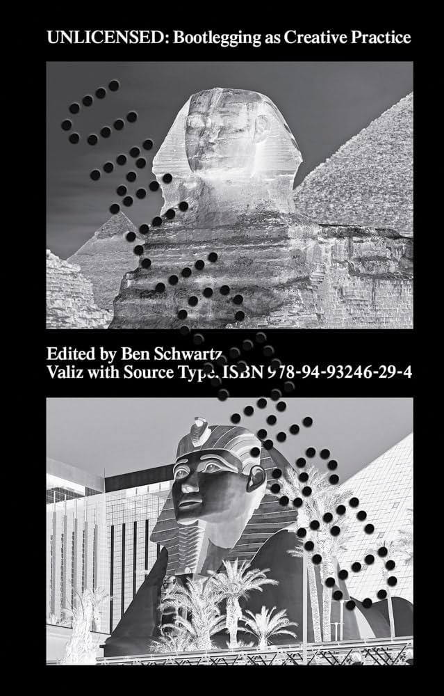
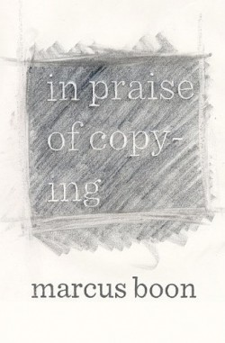
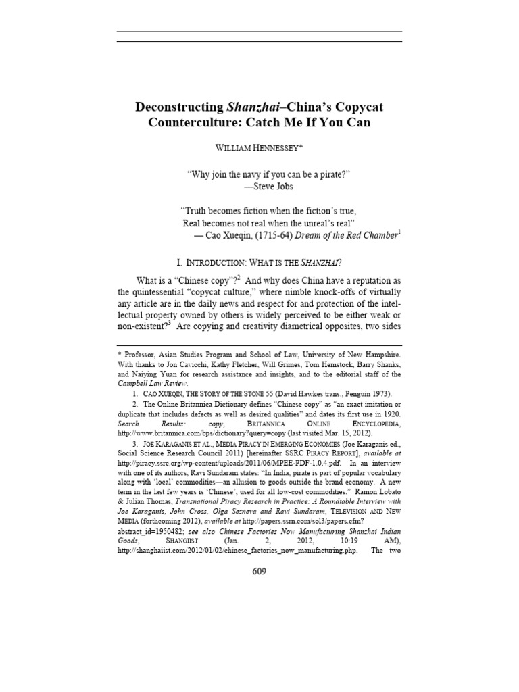
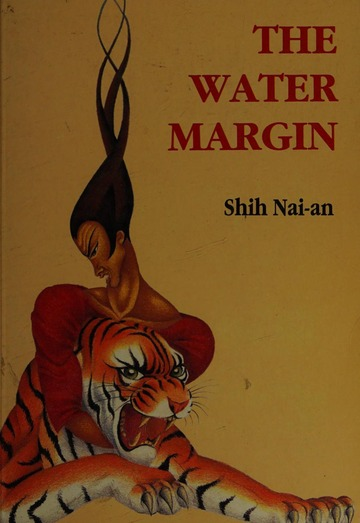

Bootlegging as Creative Practice
UNLICENSED contains twenty-one interviews with a range of creative practitioners on the topic of bootlegging.

Shanzhai: Deconstruction in Chinese
Han outlines the ideas: quan (law shifting weight), zhen ji (process-based origin), and shanzhai, rejecting fixed originality.

In Praise of Copying
Boon, argues copying is fundamental to being human, worth celebrating, and key to understanding ourselves and the world.

Deconstructing Shanzhai-China's Copycat Counterculture: Catch Me If You Can
Hennessey examines Chinese copycat culture, relation to creativity, and the legal frameworks enabling it.

The Water Margin / 108 Heroes
Set during the Sung dynasty, a group of outlaws hiding out in the mountains fight against the oppressive empire.